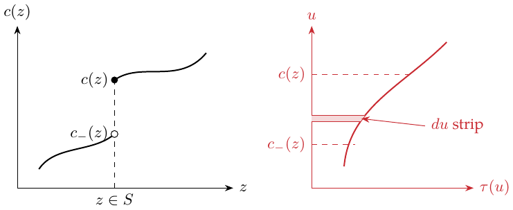

Lecture 10: Local average treatment effects
Recall the Lecture 9 IV model: \[Y_i=\alpha+W_i\tau+\varepsilon_i,\quad\varepsilon_i\perp Z_i, \qquad W_i=Z_i\gamma+\eta_i.\tag{10.1}\] When \(Z_i\) is binary, \[\begin{aligned} \tau&=\frac{\operatorname{Cov}(Y_i,Z_i)}{\operatorname{Cov}(W_i,Z_i)}\\ &=\frac{\mathbb E[Y_i\mid Z_i=1]-\mathbb E[Y_i\mid Z_i=0]} {\mathbb E[W_i\mid Z_i=1]-\mathbb E[W_i\mid Z_i=0]}. \end{aligned} \tag{10.2}\]
Treatment effects under noncompliance
In an RCT with noncompliance, \(Y_i\in\mathbb R\) is the ordinary outcome; \(W_i\in\{0,1\}\) is the treatment actually received and is not randomized; \(Z_i\in\{0,1\}\) is randomized treatment assignment.
The constant \(\tau\) in (10.1) may not be appropriate, and treatment receipt may be related to the treatment effect. Define potential treatment receipt \(W_i(0),W_i(1)\), with \(W_i=W_i(Z_i)\) and \(Y_i=Y_i(W_i(Z_i))\).
The IV validity assumptions are:
Exclusion restriction: \(Y_i(w,z)=Y_i(w)\). Assignment affects the outcome only through treatment receipt.
Exogeneity: \(\{Y_i(0),Y_i(1),W_i(0),W_i(1)\}\perp Z_i\). Assignment is randomized.
Relevance: \(\mathbb E[W_i(1)-W_i(0)]\ne0\). Assignment affects treatment receipt.
There are four compliance types:
| \(W_i(1)=0\) | \(W_i(1)=1\) | |
|---|---|---|
| \(W_i(0)=0\) | Never-taker | Complier |
| \(W_i(0)=1\) | Defier | Always-taker |
Assume there are no defiers, that is, monotonicity:
\[W_i(1)\ge W_i(0)\quad\text{for every }i.\]
Then \[\begin{aligned} &\mathbb E[Y_i\mid Z_i=1]-\mathbb E[Y_i\mid Z_i=0]\\ &\quad=\mathbb E[Y_i(W_i(1))\mid Z_i=1] -\mathbb E[Y_i(W_i(0))\mid Z_i=0]\\ &\quad=\mathbb E[Y_i(W_i(1))-Y_i(W_i(0))]\\ &\quad=\mathbb E[\mathbf1\{C_i=\mathrm{complier}\} (Y_i(1)-Y_i(0))]. \end{aligned}\] If compliers exist, applying Bayes’ rule gives \[\begin{aligned} \tau_{\mathrm{LATE}} &=\frac{\mathbb E[Y_i\mid Z_i=1]-\mathbb E[Y_i\mid Z_i=0]} {\mathbb E[W_i\mid Z_i=1]-\mathbb E[W_i\mid Z_i=0]}\\ &=\mathbb E[Y_i(1)-Y_i(0)\mid C_i=\mathrm{complier}]. \end{aligned} \tag{10.3}\] This is the complier average treatment effect. Assume \(0<P(Z=1)<1\) and a positive complier share. This identifies the complier average effect, not the population ATE in general.
My comparison with the ATE.
When the constant-effect model (10.1) fails and there are never-takers, always-takers, defiers, and so on, the individual contrast \(Y_i(1)-Y_i(0)\) is not generally observable. In particular, a never-taker is never observed with \(W_i=1\). The population ATE is \(\mathbb E[Y_i(1)-Y_i(0)]\); the complier outcomes alone do not identify it.
Supply and demand
For each market \(i=1,\ldots,n\), let \(S_i(p,z)\) be its supply curve and \(Q_i(p,z)\) its demand curve, where price \(p\in\mathbb R\) and the instrument \(z\in\{0,1\}\). Assume supply is continuous and strictly increasing in price, demand is continuous and strictly decreasing, and the curves cross. The equilibrium price \(P_i\) is the unique solution to \[S_i(P_i,Z_i)=Q_i(P_i,Z_i).\] Thus \(Z_i\) is the IV, \(P_i\) is treatment, and \(Q_i(P_i,Z_i)\) is the outcome \(Y_i\).
\[Z_i\longrightarrow S_i\longrightarrow P_i\longrightarrow Q_i(P_i).\]
Conditions:
Exclusion: \(Q_i(p,z)=Q_i(p)\) for every \(p,z\).
Exogeneity: \(\{Q_i(p),S_i(p,z)\}\perp Z_i\).
Relevance: \(\operatorname{Cov}(P_i,Z_i)\ne0\).
Monotonicity: \(S_i(p,1)\le S_i(p,0)\) for all relevant \(p\).
For the ordinary-integral formula below, assume demand is absolutely continuous on the affected price intervals, with enough integrability for Fubini. My broader thought is that monotone demand has a distributional derivative even without ordinary differentiability. \[\begin{aligned} \tau_{\mathrm{LATE}} &=\frac{\mathbb E[Q_i\mid Z_i=1]-\mathbb E[Q_i\mid Z_i=0]} {\mathbb E[P_i\mid Z_i=1]-\mathbb E[P_i\mid Z_i=0]}\\ &=\frac{\displaystyle\int \mathbb E[Q_i'(p)\mid P_i(0)\le p\le P_i(1)] P[P_i(0)\le p\le P_i(1)]\,dp} {\displaystyle\int P[P_i(0)\le p\le P_i(1)]\,dp}. \end{aligned}\] The denominator is the total weight.
Supplementary explanation: distributional derivatives
For merely monotone demand the derivative is a signed measure \(dQ_i\), and \(Q_i(P_i(1))-Q_i(P_i(0))=\int_{(P_i(0),P_i(1)]}dQ_i\). This includes singular continuous changes that an ordinary derivative density need not capture.
Derivation.
\[\begin{aligned} &\mathbb E[Q_i\mid Z_i=1]-\mathbb E[Q_i\mid Z_i=0]\\ &\quad=\mathbb E[Q_i(P_i(1))\mid Z_i=1] -\mathbb E[Q_i(P_i(0))\mid Z_i=0]\\ &\quad=\mathbb E[Q_i(P_i(1))-Q_i(P_i(0))]\\ &\quad=\mathbb E\left[\int_{P_i(0)}^{P_i(1)}Q_i'(p)\,dp\right]\\ &\quad=\int\mathbb E[Q_i'(p)\mid P_i(0)\le p\le P_i(1)] P[P_i(0)\le p\le P_i(1)]\,dp. \end{aligned}\]
Fubini: interchange integration order \(\textcolor{red}{\longrightarrow}\) \(E[\int Q_i'(p)\,dp]\) becomes an integral of the expectation.
Threshold crossing and willingness to pay
Suppose each subject has an unobserved endogenous variable \(U_i\) such that \[W_i=\mathbf1\{U_i\ge c(Z_i)\},\] where \(c(z)\) is a cutoff function depending on the instrument. Normalize the latent rank as \(U_i\sim\operatorname{Unif}[0,1]\), giving \[c(z)=1-P(W_i=1\mid Z_i=z).\] Use \(U\perp Z\) and effective cutoffs \(c(z)\in[0,1]\). The uniform rank normalization is direct for a continuous latent distribution; atoms require a separate argument.
The IV setup imposes:
Potential outcomes \(Y_i(0),Y_i(1)\) with \(Y_i=Y_i(W_i)\): the instrument has no direct route to the outcome.
\(\{Y_i(0),Y_i(1),U_i\}\perp Z_i\): exogeneity.
\(c(Z_i)\) has a nontrivial distribution: relevance.
\(c(z)\) is càdlàg (right-continuous with left limits) and nondecreasing. Then \(W_i\) is nonincreasing in \(Z_i\). Reversing the instrument orientation gives the earlier complier interpretation. Both IV covariances reverse sign together, leaving the ratio unchanged.
Define the marginal treatment effect (MTE) \[\tau(u)=\mathbb E[Y_i(1)-Y_i(0)\mid U_i=u].\tag{10.6}\] The IV estimand is a weighted average of \(\tau(u)\). Let \(Z_i\sim\mathcal N(0,1)\), with density \(\varphi\). Let \(S\subset\mathbb R\) be the discontinuity set of \(c\), and \[c_-(z)=\lim_{a\uparrow z}c(a).\] If \(c\) has only absolutely continuous variation and jumps, the representation is \[\tau_{\mathrm{LATE}}= \frac{\displaystyle\sum_{z\in S} \left\{\int_{c_-(z)}^{c(z)}\tau(u)\,du\right\}\varphi(z) +\int_{\mathbb R\setminus S}\tau(c(z))c'(z)\varphi(z)\,dz} {\displaystyle\sum_{z\in S}(c(z)-c_-(z))\varphi(z) +\int_{\mathbb R\setminus S}c'(z)\varphi(z)\,dz}.\] This displays the IV estimand as a convex average of marginal treatment effects.
My explanation of the weights.
The drawing plots \(c(z)\) against \(z\) with an open dot at the left limit and a filled dot at the value after a jump. The jump location belongs to \(S\).

At a jump, integrate \(\tau(u)\) over the strip from \(c_-(z)\) to \(c(z)\) and multiply by \(\varphi(z)\). On the continuous part, evaluate the treatment effect at \(u=c(z)\) and weight it by \(c'(z)\varphi(z)\).
Gaussian density factor \(\textcolor{red}{\longrightarrow}\) \(\varphi(z)\).
Treatment effect at \(u=c(z)\) \(\textcolor{red}{\longrightarrow}\) \(\tau(c(z))\).
Weight \(\textcolor{red}{\longrightarrow}\) \(c'(z)\varphi(z)\).
The denominator adds the total weight. The factor \(\varphi(z)\) is a density value, not \(P(Z=z)\). A jump receives weight \((c(z)-c_-(z))\varphi(z)\) before normalization. The second sketch marks a thin \(du\) strip within the jump interval, making its contribution explicit.
A thought about monotonicity.
A bounded monotone cutoff has bounded variation, represented by its Stieltjes measure \(dc\). If it is also absolutely continuous, \[c(z)=c_0+\int_{-\infty}^z c'(a)\,da,\] with \(c'\ge0\). Monotonicity alone does not make the ordinary derivative integral capture jumps or singular continuous variation.
Single jumps, multiple jumps, and continuous cutoffs
Example 1: one jump.
For a cutoff otherwise constant with a single jump, \[c(z)=c_0+\delta_1\mathbf1\{z\ge z_1\},\] the groups are (the middle group is a complier group after reversing instrument orientation) \[\begin{array}{ll} \text{Never-taker:}&U_i<c_0,\\ \text{Switcher:}&c_0\le U_i<c_0+\delta_1,\\ \text{Always-taker:}&U_i\ge c_0+\delta_1. \end{array}\]
For \(K\) jumps, \[c(z)=c_0+\sum_{k=1}^K\delta_k\mathbf1\{z\ge z_k\},\] and \[\tau_{\mathrm{LATE}}= \frac{\displaystyle\sum_{k=1}^K \mathbb E[\tau(U_i)\mid c_-(z_k)\le U_i<c(z_k)] (c(z_k)-c_-(z_k))\varphi(z_k)} {\displaystyle\sum_{k=1}^K(c(z_k)-c_-(z_k))\varphi(z_k)}.\] It is a convex combination of the average effects in the switching strata. The weights depend on the size of each stratum in \(U\) space and on \(\varphi(z_k)\).
Example 2: a continuous cutoff.
If \(c(z)\) is absolutely continuous, the formula becomes \[\tau_{\mathrm{LATE}}= \frac{\displaystyle\int_{\mathbb R}\tau(c(z))c'(z)\varphi(z)\,dz} {\displaystyle\int_{\mathbb R}c'(z)\varphi(z)\,dz}.\] The covariance derivation is \[\begin{aligned} \operatorname{Cov}(Y_i,Z_i) &=\operatorname{Cov}(Y_i(0)+(Y_i(1)-Y_i(0))W_i,Z_i)\\ &=\operatorname{Cov}((Y_i(1)-Y_i(0))W_i,Z_i)\\ &=\operatorname{Cov}((Y_i(1)-Y_i(0))\mathbf1\{U_i\ge c(Z_i)\},Z_i)\\ &=\operatorname{Cov}(\tau(U_i)\mathbf1\{U_i\ge c(Z_i)\},Z_i). \end{aligned}\] Define \[H(z)=\mathbb E[\tau(U_i)\mathbf1\{U_i\ge c(z)\}].\] For standard Gaussian \(Z_i\) and absolutely continuous \(H\) with the required integrability, Gaussian integration by parts gives \[\operatorname{Cov}(H(Z_i),Z_i)=\mathbb E[H'(Z_i)].\]
My question: distributional derivatives.
Does \(H'(z)\) denote the distributional derivative of \(H(\cdot)\)? My attempt is to combine the jump and continuous contributions: \[-H'\;\stackrel{?}{=}\; \begin{cases} \left\{\displaystyle\int_{c_-(z)}^{c(z)}\tau(u)\,du\right\}\delta_z,&z\in S,\\ \tau(c(z))c'(z),&\text{elsewhere}. \end{cases}\] I am thinking of a Dirac delta at \(z\): its mass is concentrated at one point and its total mass is \(1\). This piecewise expression is my tentative shorthand mixing a measure with a density.
Supplementary derivation: write the derivative as a measure
Let \(F(u)=\int_0^u\tau(v)\,dv\). Since \(H=F(1)-F\circ c\), the complete expression is \(-dH=d(F\circ c)\). At a jump \(z\), its mass is \(\int_{c_-(z)}^{c(z)}\tau(u)\,du\); on an absolutely continuous part its density is \(\tau(c(z))c'(z)\). A singular continuous part may also be present. A Dirac delta is a measure or distribution, not an ordinary function. For a nonconstant, right-continuous, nondecreasing \([0,1]\)-valued cutoff, integrable \(\tau\) and the required covariance moments, Gaussian integration by parts gives \[\tau_{\rm IV}=\frac{\int_{\mathbb R}\varphi(z)\,d[F(c(z))]}{\int_{\mathbb R}\varphi(z)\,dc(z)}.\] Both covariances carry a minus sign, which cancels in the ratio. This retains my jump-strip interpretation while including variation that an ordinary integral can miss.1
Estimating the marginal treatment effect
At a smooth point of \(c(z)\), \[\tau(c(z))= \frac{\displaystyle\frac d{dz}\mathbb E[Y_i\mid Z_i=z]} {\displaystyle\frac d{dz}P(W_i=1\mid Z_i=z)}.\tag{10.12}\] Assume the derivatives are well behaved, the numerator and denominator can be estimated, and the denominator is nonzero. This identifies latent ranks reached by the instrument propensity support. At the target require \(c'(z)\ne0\) and \(F'(c(z))=\tau(c(z))\) for \(F(u)=\int_0^u\tau(v)\,dv\); continuity of \(\tau\) there is sufficient.
Proof.
\[\begin{aligned} \mathbb E[Y_i\mid c(Z_i)=c] &=\mathbb E[Y_i(0)+\mathbf1\{U_i\ge c\}(Y_i(1)-Y_i(0)) \mid c(Z_i)=c]\\ &=\mathbb E[Y_i(0)+\mathbf1\{U_i\ge c\}(Y_i(1)-Y_i(0))]\\ &=\mathbb E[Y_i(0)]+\int_c^1\tau(u)\,du. \end{aligned}\] The last step is marked “Fubini.” Therefore \[\tau(c)=-\frac d{dc}\mathbb E[Y_i\mid c(Z_i)=c].\] By the chain rule, \[\frac d{dz}\mathbb E[Y_i\mid Z_i=z] =\left.\frac d{dc}\mathbb E[Y_i\mid c(Z_i)=c]\right|_{c=c(z)}c'(z).\] Since \(U_i\sim\operatorname{Unif}(0,1)\) independently of \(Z_i\), \[c'(z)=-\frac d{dz}P(W_i=1\mid Z_i=z).\] Combining these identities gives (10.12), as required.
The bounded-variation discussion in Lecture 10, footnote 4, also needs this measure interpretation.↩︎